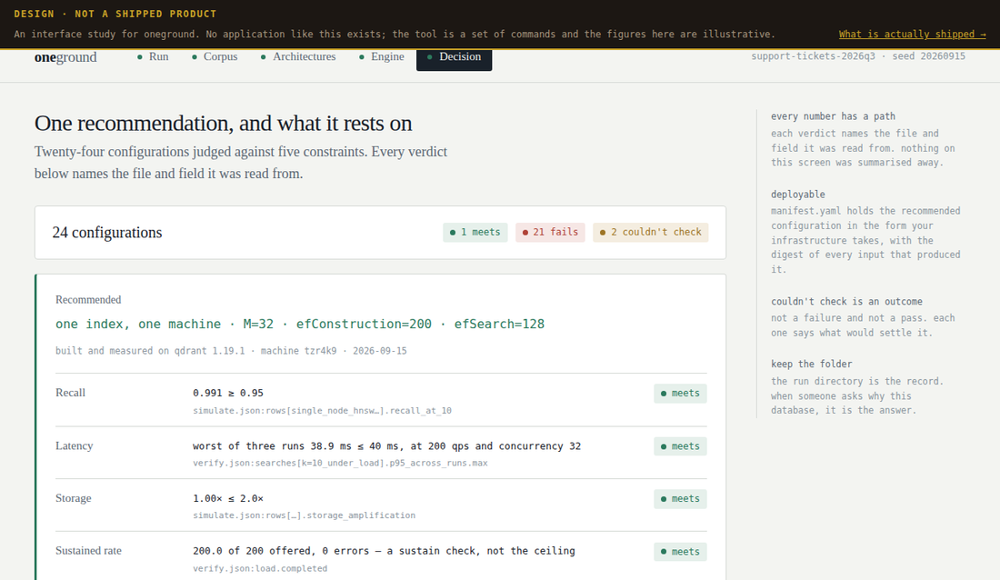
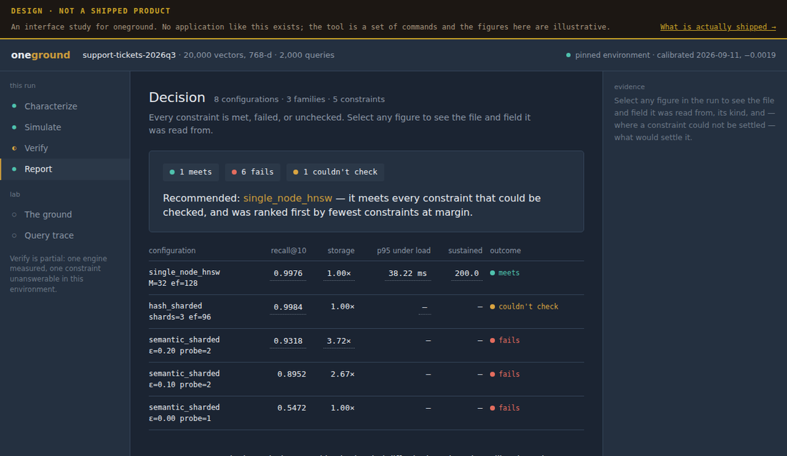

Roadmaps are usually a way of being credited for work that has not happened. This one is written so you can check it: every claim below is either a design you can open, a specification you can read, or a state in a machine-readable file you can diff against next month's.
| state | meaning |
|---|---|
| Shipped | Installable or readable today, by you, without asking us. It has a version, a licence and an address. |
| Specified, not built | Written down in enough detail that someone else could implement it — and nobody has, including us. |
| Designed, not built | A picture of something. No code behind it. The most flattering and least trustworthy kind of artifact, which is why it lives here. |
oneground today is a set of commands that write files. These are studies of what an interface over those commands could look like. They are not screenshots. Every figure in them is illustrative, and each one carries that on its own face so it cannot be separated from the claim by a screenshot or a shared link.
Design · not built A run, in five steps → — what the file you write, the corpus measurement, the architectures, the engine run and the decision could look like as one flow.

The thing worth taking from these is not the layout. It is that every number in them is designed to carry the file and field it was read from — which is a property of the output format, and that part is real.
| what | where |
|---|---|
| onedoor — per-action authorization | v0.7.0 on PyPI · Apache-2.0 · source public |
| onewatch — change evidence | public since 10 September · Apache-2.0 · source public |
| oneground — retrieval architecture choice | preview on PyPI · the case · the live lab |
| Stage records — the format, samples and verifier | the format · samples, verifier, ten rejection vectors |
| Two Internet-Drafts | draft-saha-aadp −03 · draft-saha-stage-receipts −00 |
The record format publishes its own open requirements. Thirteen of them, each with a state and a note about whether the validation battery can even test it. Nine have not been started. That is not a confession — it is the point of publishing a register rather than a roadmap.
| # | requirement | state | can the battery test it? |
|---|---|---|---|
| 10 | Content trust class | specified | testable |
| 11 | Emission failure semantics | specified | testable |
| 2 | Epoch anchoring — load-bearing | not started | partial |
| 7 | Receipt topology / DAG — load-bearing, and the battery's largest hole | not started | not yet |
| 9 | Coverage attestation and causal completeness | not started | testable |
| 1, 3, 4, 5, 6, 8, 12, 13 | Merkle manifest · tenant isolation · signature envelope · dependency record · key lifecycle · disclosure layer · schema evolution · external effect records | not started | mixed |
The reference SDK for stage records has not been started, and the validation battery it will be judged against was published before it — deliberately, so the exam cannot be written to fit the answer. Two of the four battery rings are specified; two are not started. Dates for each live in the register rather than in prose here, because a date in prose ages and a field in a file can be diffed.
None of the above is a promise you have to take on trust, because it is published as data rather than as a paragraph:
# the register itself — every requirement, every state, machine-readable
curl -s https://oneproof.dev/samples/watch/STATUS.json
# what changed since you last looked — it diffs STATES, not notes
python watch/whatchanged.py old.json new.json
It diffs states rather than prose on purpose: a roadmap where the words get warmer while
nothing moves is the failure mode this file exists to prevent. If a requirement is still
not-started next month, the diff will say so, and it will say so whether or not we
mention it.